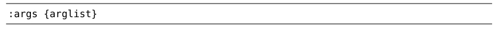
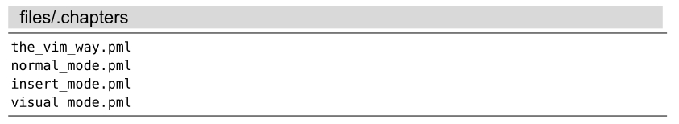

）：
）：技巧37用参数列表将缓冲区分组
参数列表易于管理，适用于对一批文件进行分组，使其更容易访问。用:argdo命令可以在参数列表中的每个文件上执行一条 Ex 命令。
我们首先用 Vim 打开一些文件：
➾ $ cd code/files/letters
➾ $ vim *.txt
《 5 files to edit
在技巧36中，我们已经看到过:ls命令会列出缓冲区列表。
现在，再让我们看看参数列表：
➾ :args
《 [a.txt] b.txt c.txt. d.txt e.txt
参数列表记录了在启动时作为参数传递给Vim的文件列表。在本例中，我们只用了一个参数*.txt。然而，shell会对*通配符进行扩展，使其匹配5个文件，这5个文件我们已经在参数列表中看到了。输出中的“[]”字符则指明了参数列表中的哪个文件是活动文件。
与:ls命令所显示的列表相比，:args命令的输出比较简陋。如果你知道参数列表是vi的一个功能，而缓冲区列表是 Vim 引入的增强功能，那么就不会觉得奇怪了。但是，请给参数列表一个表现的机会，你会发现它是缓冲区列表的一个强力补充。
就像其他许多功能一样，Vim 的参数列表功能也被增强了，只是名字还沿用原来的而已。实际上，我们可以在任意时刻改变参数列表的内容，就是说:args列表并不一定反映启动Vim时所传的参数。千万别被表面的名字给唬住了！（同样的情况请见“‘:compiler’与‘:make’不仅限于编译型语言”。）
填充参数列表
当不带参数运行:args命令时，它会打印当前参数列表的内容。另外，我们也可以用下列格式来设置参数列表的内容（参见:h :args_f）：

{arglist}可以包括文件名、通配符，甚至是一条 shell 命令的输出结果。我们将使用files/mvc目录作为演示，你可以在随本书发布的源文件中找到此目录。如果你打算照着做的话，请先切换到此目录，然后再启动 Vim：
➾$ cd code/files/mvc
➾$ vim
要了解此目录树的结构，请参见技巧41。
用文件名指定文件
填充参数列表最简单的方式是逐一指定文件的名字：
➾ :args index.html app.js
➾ :args
《 [index.html] app.js
如果只是想在列表里增加几个文件，用这种方式就行了。它的好处是可以指定文件的次序，但它也有一个缺点，那就是手动增加文件的工作量比较大。如果想往参数列表中加入大量文件，那么使用通配符会快得多。
用 Glob 模式指定文件
通配符是一个占位标记，它代表了可用于文件或目录名称的字符。*符号用于匹配0个或多个字符，但它的范围仅局限于指定的目录，而不会递归其子目录（参见:h wildcard）；**通配符也匹配0个或多个字符，但它可以递归进入指定目录的子目录（参见:h starstar-wildcard）。
我们可以把这两种通配符结合起来用，并加上部分文件名或目录名，以此构造一个模式（即所谓的glob模式），然后用它来匹配我们感兴趣的文件集合。下表总结了在files/mvc目录中满足指定glob模式的一些有代表性的文件（并未列出全部）：
| Glob模式 | 所匹配的文件 |
| :args *.* | index.html app.js |
| :args **/*.js | app.js lib/framework.js app/controllers/Mailer.js ...etc |
| :args **/*.* | app.js index.html lib/framework.js lib/theme.css app/controllers/Mailer.js ...etc |
就像可在{arglist}中使用多个文件名一样，我们也可以使用不止一个 glob模式。如果我们想构造一个只包含.js和.css文件，但不包含其他文件类型的参数列表，可以采用以下glob模式：
➾ :args **/*.js **/*.css
用反引号结构指定文件
在写这本书时，有时我想按照目录顺序把每一章的文件名加入到参数列表中。为达到这一目的，我维护了一个文本文件，每行保存一个文件名。下面的内容就节选自此文本文件：

然后，我就可以执行下面的命令，用该文件的内容填充参数列表：
➾ :args `cat .chapters`
Vim 会在 shell 中执行反撇号（`）括起来的命令，然后再把cat命令的输出作为:args命令的参数。虽然本例是用cat命令获取.chapters文件的内容，但实际上我们可以用这种方式执行任意可用的shell命令。然而，此功能并不是所有系统都可用，更多细节请查阅:h backtick-expansion。
使用参数列表
参数列表比缓冲区列表更容易管理，这使其成为对缓冲区进行分组的理想方式。通过使用:args {arglist}命令，一下就可清空并重新设置参数列表，接着就可以用:next及:prev命令遍历参数列表中的文件，或是用:argdo命令在列表中的每个缓冲区上执行同一条命令。
我的感觉是：缓冲区列表就像是我的计算机桌面（desktop），它永远是乱七八糟的；而参数列表则像一个整洁的独立工作区（workspace），只有在需要扩展空间时才会用到它。我们将会看到其他一些使用参数列表的例子，请参见技巧69和技巧96。